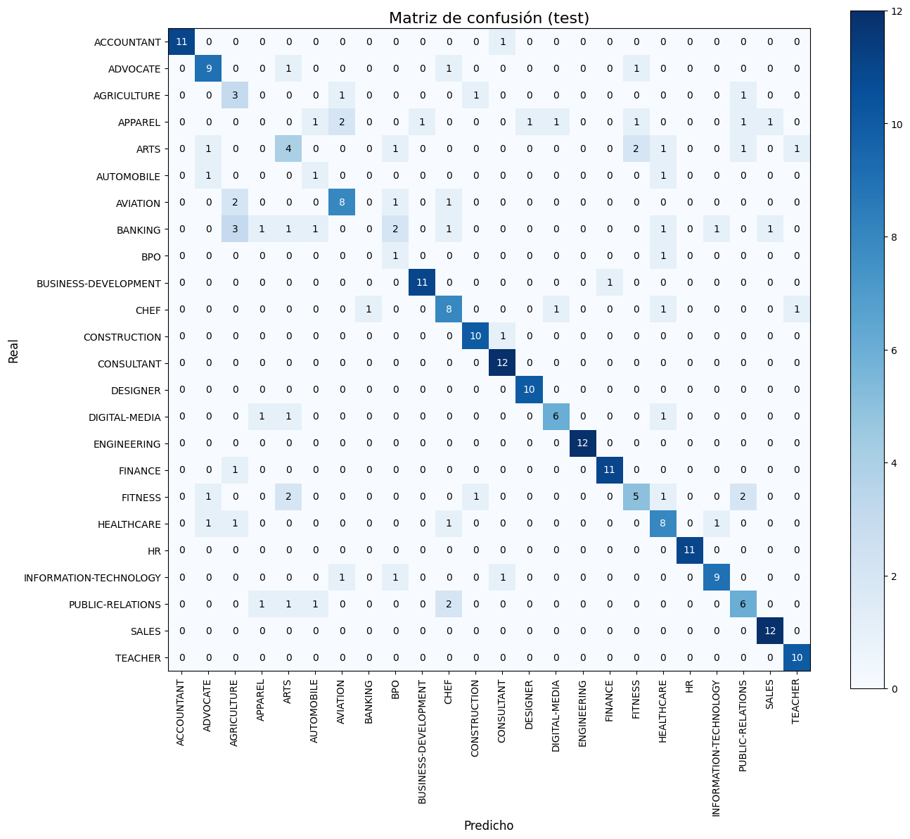

2: Word2Vec + BiLSTM#
import warnings
warnings.filterwarnings("ignore")
import os, numpy as np, pandas as pd
PROJECT_DIR = r"C:\Users\elias\OneDrive\Desktop\MachineLearning\JBOOKS\Project3DL2"
DATA_PATH = rf"{PROJECT_DIR}\jarvis-calling-hiring-contest\Resume\Resume.csv"
TEXT_COL = "Resume_str"
LABEL_COL = "Category"
SEED = 42
np.random.seed(SEED)
# Si ya existen en la sesión, reusamos; si no, creamos
try:
train_df, val_df, test_df
except NameError:
from sklearn.model_selection import train_test_split
df = pd.read_csv(DATA_PATH).dropna(subset=[TEXT_COL, LABEL_COL]).reset_index(drop=True)
train_df, temp_df = train_test_split(df, test_size=0.20, random_state=SEED, stratify=df[LABEL_COL])
val_df, test_df = train_test_split(temp_df, test_size=0.50, random_state=SEED, stratify=temp_df[LABEL_COL])
print("train/val/test:", train_df.shape, val_df.shape, test_df.shape)
# Mapeo de etiquetas
all_labels = sorted(train_df[LABEL_COL].unique())
label2id = {c:i for i,c in enumerate(all_labels)}
id2label = {i:c for c,i in label2id.items()}
NUM_CLASSES = len(all_labels)
NUM_CLASSES
train/val/test: (1987, 4) (248, 4) (249, 4)
24
import re, unicodedata
def clean_text_min(s: str) -> str:
if not isinstance(s, str): return ""
s = unicodedata.normalize("NFKC", s).lower()
s = re.sub(r"<[^>]+>", " ", s) # quita HTML simple
s = re.sub(r"[^\w\s]", " ", s, flags=re.UNICODE) # deja letras/números/espacios
s = re.sub(r"\s+", " ", s).strip()
return s
def simple_tokenize(s: str):
s = clean_text_min(s)
return s.split()
# Tokeniza corpus (solo una vez)
train_tokens = [simple_tokenize(t) for t in train_df[TEXT_COL].tolist()]
val_tokens = [simple_tokenize(t) for t in val_df[TEXT_COL].tolist()]
test_tokens = [simple_tokenize(t) for t in test_df[TEXT_COL].tolist()]
y_train = train_df[LABEL_COL].map(label2id).values.astype(np.int64)
y_val = val_df[LABEL_COL].map(label2id).values.astype(np.int64)
y_test = test_df[LABEL_COL].map(label2id).values.astype(np.int64)
len(train_tokens), len(val_tokens), len(test_tokens), NUM_CLASSES
(1987, 248, 249, 24)
from collections import Counter
MAX_VOCAB = 50000 # puedes subir/bajar
PAD, UNK = "<pad>", "<unk>"
def build_vocab(token_lists, max_vocab=MAX_VOCAB):
cnt = Counter()
for toks in token_lists:
cnt.update(toks)
most_common = [w for w,_ in cnt.most_common(max_vocab-2)]
itos = [PAD, UNK] + most_common
stoi = {w:i for i,w in enumerate(itos)}
return itos, stoi
itos, stoi = build_vocab(train_tokens, MAX_VOCAB)
vocab_size = len(itos)
vocab_size
36218
def encode_tokens(token_lists, stoi_map, seq_len):
X = np.zeros((len(token_lists), seq_len), dtype=np.int64) # PAD=0
for i, toks in enumerate(token_lists):
ids = [stoi_map.get(t, 1) for t in toks] # UNK=1
ids = ids[:seq_len]
X[i, :len(ids)] = ids
return X
# cachés para no recomputar al variar seq_len
_X_cache = {}
def get_encoded(seq_len):
if seq_len not in _X_cache:
Xtr = encode_tokens(train_tokens, stoi, seq_len)
Xva = encode_tokens(val_tokens, stoi, seq_len)
Xte = encode_tokens(test_tokens, stoi, seq_len)
_X_cache[seq_len] = (Xtr, Xva, Xte)
return _X_cache[seq_len]
from gensim.models import Word2Vec
import numpy as np, os
_w2v_cache = {} # {emb_dim: gensim_model}
_emb_cache = {} # {emb_dim: np.ndarray [vocab_size, emb_dim]}
def train_word2vec(token_lists, emb_dim=100, window=5, min_count=1, sg=1, negative=5, epochs=10):
# cachea por dimensión
if emb_dim in _w2v_cache:
return _w2v_cache[emb_dim]
w2v = Word2Vec(
sentences=token_lists, vector_size=emb_dim, window=window,
min_count=min_count, sg=sg, negative=negative, workers=max(1, os.cpu_count()-1), epochs=epochs, seed=SEED
)
_w2v_cache[emb_dim] = w2v
return w2v
def build_embedding_matrix(w2v, itos):
emb_dim = w2v.vector_size
if emb_dim in _emb_cache:
return _emb_cache[emb_dim]
M = np.random.uniform(-0.05, 0.05, size=(len(itos), emb_dim)).astype(np.float32)
M[0] = 0.0 # PAD=0 vector cero
for idx, tok in enumerate(itos):
if tok in w2v.wv:
M[idx] = w2v.wv[tok]
_emb_cache[w2v.vector_size] = M
return M
import torch
from torch.utils.data import Dataset, DataLoader
class NumpyTextDataset(Dataset):
def __init__(self, X, y):
self.X = torch.as_tensor(X, dtype=torch.long)
self.y = torch.as_tensor(y, dtype=torch.long)
def __len__(self): return self.X.shape[0]
def __getitem__(self, i): return self.X[i], self.y[i]
def make_loaders(Xtr, ytr, Xva, yva, batch_size=32):
train_ds = NumpyTextDataset(Xtr, ytr)
val_ds = NumpyTextDataset(Xva, yva)
train_dl = DataLoader(train_ds, batch_size=batch_size, shuffle=True, num_workers=0, pin_memory=True)
val_dl = DataLoader(val_ds, batch_size=batch_size, shuffle=False, num_workers=0, pin_memory=True)
return train_dl, val_dl
import torch.nn as nn
import torch
class BiLSTMClassifier(nn.Module):
def __init__(self, vocab_size, emb_dim, hidden_size, num_layers, num_classes, emb_matrix=None, dropout=0.5, pad_idx=0):
super().__init__()
self.embedding = nn.Embedding(vocab_size, emb_dim, padding_idx=pad_idx)
if emb_matrix is not None:
self.embedding.weight.data.copy_(torch.from_numpy(emb_matrix))
# fine-tune embeddings (puedes congelar si quieres):
# self.embedding.weight.requires_grad = False
self.lstm = nn.LSTM(
input_size=emb_dim,
hidden_size=hidden_size,
num_layers=num_layers,
batch_first=True,
bidirectional=True,
dropout=(dropout if num_layers > 1 else 0.0)
)
self.dropout = nn.Dropout(dropout)
self.fc = nn.Linear(hidden_size * 2, num_classes) # 2 por bidireccional
def forward(self, x):
emb = self.embedding(x) # [B, L, E]
out, _ = self.lstm(emb) # [B, L, 2H]
# mean-pooling en el tiempo, ignorando PAD=0
mask = (x != 0).unsqueeze(-1) # [B, L, 1]
out = out * mask # enmascara pads
sums = out.sum(dim=1) # [B, 2H]
lens = mask.sum(dim=1).clamp(min=1) # [B, 1]
pooled = sums / lens
logits = self.fc(self.dropout(pooled)) # [B, C]
return logits
# Reemplaza tu train_one por esta versión
from sklearn.metrics import accuracy_score, precision_recall_fscore_support
import numpy as np, torch, torch.nn as nn
def compute_metrics_np(y_true, y_pred):
acc = accuracy_score(y_true, y_pred)
prec, rec, f1, _ = precision_recall_fscore_support(y_true, y_pred, average="macro", zero_division=0)
return {"accuracy":acc, "precision_macro":prec, "recall_macro":rec, "f1_macro":f1}
def evaluate_model(model, dl, device):
model.eval()
all_preds, all_y = [], []
with torch.no_grad():
for xb, yb in dl:
xb = xb.to(device, non_blocking=True)
yb = yb.to(device, non_blocking=True)
logits = model(xb)
preds = logits.argmax(dim=1)
all_preds.append(preds.cpu().numpy())
all_y.append(yb.cpu().numpy())
y_pred = np.concatenate(all_preds)
y_true = np.concatenate(all_y)
return compute_metrics_np(y_true, y_pred), (y_true, y_pred)
def train_one(model, train_dl, val_dl=None, *, epochs, lr, class_weights=None, device=None, patience=3, use_amp=True):
device = device or (torch.device("cuda") if torch.cuda.is_available() else torch.device("cpu"))
model = model.to(device)
optimizer = torch.optim.AdamW(model.parameters(), lr=lr, weight_decay=1e-2)
if class_weights is not None:
cw = torch.tensor(class_weights, dtype=torch.float32, device=device)
criterion = nn.CrossEntropyLoss(weight=cw)
else:
criterion = nn.CrossEntropyLoss()
scaler = torch.cuda.amp.GradScaler(enabled=(use_amp and torch.cuda.is_available()))
if val_dl is None:
best_loss = float("inf")
else:
best_f1 = -1.0
best_state = None
bad_epochs = 0
for ep in range(1, epochs+1):
model.train()
running_loss = 0.0
for xb, yb in train_dl:
xb = xb.to(device, non_blocking=True)
yb = yb.to(device, non_blocking=True)
optimizer.zero_grad(set_to_none=True)
with torch.cuda.amp.autocast(enabled=(use_amp and torch.cuda.is_available())):
logits = model(xb)
loss = criterion(logits, yb)
scaler.scale(loss).backward()
nn.utils.clip_grad_norm_(model.parameters(), max_norm=1.0)
scaler.step(optimizer); scaler.update()
running_loss += loss.item()
avg_train_loss = running_loss / max(1, len(train_dl))
if val_dl is not None:
val_metrics, _ = evaluate_model(model, val_dl, device)
val_f1 = val_metrics["f1_macro"]
print(f"Epoch {ep:02d} | train_loss={avg_train_loss:.4f} | val_f1={val_f1:.4f}")
improved = val_f1 > best_f1
if improved:
best_f1 = val_f1
else:
print(f"Epoch {ep:02d} | train_loss={avg_train_loss:.4f}")
improved = avg_train_loss < best_loss
if improved:
best_loss = avg_train_loss
if improved:
best_state = {k: v.detach().cpu().clone() for k, v in model.state_dict().items()}
bad_epochs = 0
else:
bad_epochs += 1
if bad_epochs >= patience:
if val_dl is not None:
print(f"Early stopping en epoch {ep}. Mejor val_f1={best_f1:.4f}")
else:
print(f"Early stopping en epoch {ep}. Mejor train_loss={best_loss:.4f}")
break
if best_state is not None:
model.load_state_dict(best_state)
return model, (best_f1 if val_dl is not None else -best_loss)
"""from sklearn.utils.class_weight import compute_class_weight
import itertools, math, torch
# Param grid
grid = {
"lstm_units": [32, 64, 128],
"num_lstm_layers": [1, 2],
"dropout_rate": [0.3, 0.5],
"learning_rate": [0.001, 0.005],
"batch_size": [32, 64],
"sequence_length": [50, 100],
"epochs": [20, 50],
"embedding_dim": [100, 200],
}
# Opcional: limita número de pruebas para iterar más rápido (None => todas)
MAX_TRIALS = None # por defecto recorre todo; pon un int para hacer "early stop" de la búsqueda
# class weights (balanceadas)
cw = compute_class_weight(class_weight="balanced", classes=np.arange(NUM_CLASSES), y=y_train)
print("class_weights:", cw)
combos = list(itertools.product(
grid["lstm_units"],
grid["num_lstm_layers"],
grid["dropout_rate"],
grid["learning_rate"],
grid["batch_size"],
grid["sequence_length"],
grid["epochs"],
grid["embedding_dim"],
))
print("Total combinaciones:", len(combos), "(usa MAX_TRIALS para acortar si quieres)")
best = {"f1_macro": -1.0, "cfg": None, "state": None}
for idx, (units, n_layers, dropout, lr, bs, seq_len, epochs, emb_dim) in enumerate(combos, start=1):
if MAX_TRIALS is not None and idx > MAX_TRIALS: break
print("\n"+"="*80)
print(f"Trial {idx}: units={units}, layers={n_layers}, drop={dropout}, lr={lr}, bs={bs}, L={seq_len}, ep={epochs}, emb_dim={emb_dim}")
# Word2Vec (cache por emb_dim)
w2v = train_word2vec(train_tokens, emb_dim=emb_dim, epochs=10)
emb_matrix = build_embedding_matrix(w2v, itos)
# Secuencias (cache por seq_len)
Xtr, Xva, Xte = get_encoded(seq_len)
train_dl, val_dl = make_loaders(Xtr, y_train, Xva, y_val, batch_size=bs)
# Modelo
model = BiLSTMClassifier(
vocab_size=vocab_size, emb_dim=emb_dim,
hidden_size=units, num_layers=n_layers,
num_classes=NUM_CLASSES, emb_matrix=emb_matrix,
dropout=dropout, pad_idx=0
)
# Entrenamiento + early stopping por f1_macro val
model, best_val = train_one(
model, train_dl, val_dl, epochs=epochs, lr=lr, class_weights=cw, patience=3, use_amp=True
)
# Guarda mejor si mejora
if best_val > best["f1_macro"]:
best["f1_macro"] = best_val
best["cfg"] = dict(lstm_units=units, num_lstm_layers=n_layers, dropout_rate=dropout,
learning_rate=lr, batch_size=bs, sequence_length=seq_len,
epochs=epochs, embedding_dim=emb_dim)
best["state"] = {k:v.detach().cpu().clone() for k,v in model.state_dict().items()}
print("\nMejor configuración (según f1_macro en val):", best["cfg"])
print("Mejor f1_macro (val):", round(best["f1_macro"], 4))
"""
'from sklearn.utils.class_weight import compute_class_weight\nimport itertools, math, torch\n\n# Param grid\ngrid = {\n "lstm_units": [32, 64, 128],\n "num_lstm_layers": [1, 2],\n "dropout_rate": [0.3, 0.5],\n "learning_rate": [0.001, 0.005],\n "batch_size": [32, 64],\n "sequence_length": [50, 100],\n "epochs": [20, 50],\n "embedding_dim": [100, 200],\n}\n\n# Opcional: limita número de pruebas para iterar más rápido (None => todas)\nMAX_TRIALS = None # por defecto recorre todo; pon un int para hacer "early stop" de la búsqueda\n\n# class weights (balanceadas)\ncw = compute_class_weight(class_weight="balanced", classes=np.arange(NUM_CLASSES), y=y_train)\nprint("class_weights:", cw)\n\ncombos = list(itertools.product(\n grid["lstm_units"],\n grid["num_lstm_layers"],\n grid["dropout_rate"],\n grid["learning_rate"],\n grid["batch_size"],\n grid["sequence_length"],\n grid["epochs"],\n grid["embedding_dim"],\n))\n\nprint("Total combinaciones:", len(combos), "(usa MAX_TRIALS para acortar si quieres)")\n\nbest = {"f1_macro": -1.0, "cfg": None, "state": None}\n\nfor idx, (units, n_layers, dropout, lr, bs, seq_len, epochs, emb_dim) in enumerate(combos, start=1):\n if MAX_TRIALS is not None and idx > MAX_TRIALS: break\n print("\n"+"="*80)\n print(f"Trial {idx}: units={units}, layers={n_layers}, drop={dropout}, lr={lr}, bs={bs}, L={seq_len}, ep={epochs}, emb_dim={emb_dim}")\n\n # Word2Vec (cache por emb_dim)\n w2v = train_word2vec(train_tokens, emb_dim=emb_dim, epochs=10)\n emb_matrix = build_embedding_matrix(w2v, itos)\n\n # Secuencias (cache por seq_len)\n Xtr, Xva, Xte = get_encoded(seq_len)\n train_dl, val_dl = make_loaders(Xtr, y_train, Xva, y_val, batch_size=bs)\n\n # Modelo\n model = BiLSTMClassifier(\n vocab_size=vocab_size, emb_dim=emb_dim,\n hidden_size=units, num_layers=n_layers,\n num_classes=NUM_CLASSES, emb_matrix=emb_matrix,\n dropout=dropout, pad_idx=0\n )\n\n # Entrenamiento + early stopping por f1_macro val\n model, best_val = train_one(\n model, train_dl, val_dl, epochs=epochs, lr=lr, class_weights=cw, patience=3, use_amp=True\n )\n\n # Guarda mejor si mejora\n if best_val > best["f1_macro"]:\n best["f1_macro"] = best_val\n best["cfg"] = dict(lstm_units=units, num_lstm_layers=n_layers, dropout_rate=dropout,\n learning_rate=lr, batch_size=bs, sequence_length=seq_len,\n epochs=epochs, embedding_dim=emb_dim)\n best["state"] = {k:v.detach().cpu().clone() for k,v in model.state_dict().items()}\n\nprint("\nMejor configuración (según f1_macro en val):", best["cfg"])\nprint("Mejor f1_macro (val):", round(best["f1_macro"], 4))\n'
print("Mejor configuración (según f1_macro en val): {'lstm_units': 128, 'num_lstm_layers': 1, 'dropout_rate': 0.3, 'learning_rate': 0.005, 'batch_size': 64, 'sequence_length': 100, 'epochs': 50, 'embedding_dim': 100}Mejor f1_macro (val): 0.7401")
Mejor configuración (según f1_macro en val): {'lstm_units': 128, 'num_lstm_layers': 1, 'dropout_rate': 0.3, 'learning_rate': 0.005, 'batch_size': 64, 'sequence_length': 100, 'epochs': 50, 'embedding_dim': 100}Mejor f1_macro (val): 0.7401
Reentrenar mejor configuración.#
import numpy as np, torch
from torch.utils.data import DataLoader
from sklearn.utils.class_weight import compute_class_weight
# 1) Carga la mejor config del grid
#cfg = best["cfg"]
cfg = {'lstm_units': 128,
'num_lstm_layers': 1,
'dropout_rate': 0.3,
'learning_rate': 0.005,
'batch_size': 64,
'sequence_length': 100,
'epochs': 50,
'embedding_dim': 100}
print("Mejor config:", cfg)
# 2) (Re)entrena Word2Vec con el emb_dim ganador en train+val para cubrir más vocabulario
tokens_trainval = train_tokens + val_tokens
w2v_best = train_word2vec(tokens_trainval, emb_dim=cfg["embedding_dim"], epochs=10)
emb_best = build_embedding_matrix(w2v_best, itos)
# 3) Reconstruye las secuencias con el sequence_length ganador
Xtr, Xva, Xte = get_encoded(cfg["sequence_length"])
# 4) Concatena train+val para el entrenamiento final
X_trva = np.concatenate([Xtr, Xva], axis=0)
y_trva = np.concatenate([y_train, y_val], axis=0)
# 5) Dataloaders
BATCH = cfg["batch_size"]
train_ds_final = NumpyTextDataset(X_trva, y_trva)
train_dl_final = DataLoader(train_ds_final, batch_size=BATCH, shuffle=True, num_workers=0, pin_memory=True)
test_ds = NumpyTextDataset(Xte, y_test)
test_dl = DataLoader(test_ds, batch_size=BATCH, shuffle=False, num_workers=0, pin_memory=True)
# 6) Class weights sobre train+val
classes = np.arange(NUM_CLASSES)
cw = compute_class_weight(class_weight="balanced", classes=classes, y=y_trva)
# 7) Modelo final
best_model = BiLSTMClassifier(
vocab_size=len(itos),
emb_dim=cfg["embedding_dim"],
hidden_size=cfg["lstm_units"],
num_layers=cfg["num_lstm_layers"],
num_classes=NUM_CLASSES,
emb_matrix=emb_best,
dropout=cfg["dropout_rate"],
pad_idx=0
)
# 8) Entrenamiento final (early stopping por f1_macro en un “pseudo-val” interno no aplica;
# aquí usamos sólo train+val; ajusta patience si quieres más iteraciones efectivas)
best_model, _ = train_one(
best_model,
train_dl_final,
val_dl=None, # ahora sí permitido
epochs=cfg["epochs"],
lr=cfg["learning_rate"],
class_weights=cw,
patience=3,
use_amp=True
)
Mejor config: {'lstm_units': 128, 'num_lstm_layers': 1, 'dropout_rate': 0.3, 'learning_rate': 0.005, 'batch_size': 64, 'sequence_length': 100, 'epochs': 50, 'embedding_dim': 100}
Epoch 01 | train_loss=3.1053
Epoch 02 | train_loss=2.6558
Epoch 03 | train_loss=2.2907
Epoch 04 | train_loss=2.2593
Epoch 05 | train_loss=2.0828
Epoch 06 | train_loss=1.9935
Epoch 07 | train_loss=1.7371
Epoch 08 | train_loss=1.5159
Epoch 09 | train_loss=1.4692
Epoch 10 | train_loss=1.1751
Epoch 11 | train_loss=0.8895
Epoch 12 | train_loss=0.6622
Epoch 13 | train_loss=0.4348
Epoch 14 | train_loss=0.3191
Epoch 15 | train_loss=0.2297
Epoch 16 | train_loss=0.1864
Epoch 17 | train_loss=0.1346
Epoch 18 | train_loss=0.0936
Epoch 19 | train_loss=0.0674
Epoch 20 | train_loss=0.0497
Epoch 21 | train_loss=0.0349
Epoch 22 | train_loss=0.0301
Epoch 23 | train_loss=0.0236
Epoch 24 | train_loss=0.0363
Epoch 25 | train_loss=0.0243
Epoch 26 | train_loss=0.0155
Epoch 27 | train_loss=0.0107
Epoch 28 | train_loss=0.0177
Epoch 29 | train_loss=0.0167
Epoch 30 | train_loss=0.0084
Epoch 31 | train_loss=0.0044
Epoch 32 | train_loss=0.0100
Epoch 33 | train_loss=0.0187
Epoch 34 | train_loss=0.0416
Early stopping en epoch 34. Mejor train_loss=0.0044
from sklearn.metrics import classification_report, confusion_matrix, precision_recall_fscore_support, accuracy_score, roc_auc_score
import matplotlib.pyplot as plt
import pandas as pd, numpy as np, torch
device = torch.device("cuda" if torch.cuda.is_available() else "cpu")
best_model = best_model.to(device).eval()
# Recorremos test para obtener probs y preds
all_probs, all_preds, all_true = [], [], []
with torch.no_grad():
for xb, yb in test_dl:
xb = xb.to(device, non_blocking=True)
yb = yb.to(device, non_blocking=True)
logits = best_model(xb)
probs = torch.softmax(logits, dim=1)
pred = probs.argmax(dim=1)
all_probs.append(probs.cpu().numpy())
all_preds.append(pred.cpu().numpy())
all_true.append(yb.cpu().numpy())
y_prob = np.concatenate(all_probs, axis=0)
y_pred = np.concatenate(all_preds, axis=0)
y_true = np.concatenate(all_true, axis=0)
# Métricas macro/weighted
acc = accuracy_score(y_true, y_pred)
prec_m, rec_m, f1_m, _ = precision_recall_fscore_support(y_true, y_pred, average="macro", zero_division=0)
prec_w, rec_w, f1_w, _ = precision_recall_fscore_support(y_true, y_pred, average="weighted", zero_division=0)
print({"accuracy":acc, "precision_macro":prec_m, "recall_macro":rec_m, "f1_macro":f1_m,
"precision_weighted":prec_w, "recall_weighted":rec_w, "f1_weighted":f1_w})
# Reporte por clase
rep = classification_report(y_true, y_pred, target_names=[id2label[i] for i in range(NUM_CLASSES)], digits=4, output_dict=True)
df_rep = pd.DataFrame(rep).transpose()
display(df_rep.head(30))
# ROC-AUC macro (OvR)
try:
roc_macro = roc_auc_score(y_true, y_prob, multi_class="ovr", average="macro")
print("ROC-AUC macro (OvR):", round(float(roc_macro),4))
except Exception as e:
print("ROC-AUC no disponible:", e)
# Top-2 accuracy
top2 = (np.argsort(-y_prob, axis=1)[:, :2] == y_true.reshape(-1,1)).any(axis=1).mean()
print("Top-2 accuracy:", round(float(top2),4))
# Matriz de confusión
cm = confusion_matrix(y_true, y_pred)
plt.figure()
plt.imshow(cm, interpolation="nearest")
plt.title("BiLSTM (Word2Vec) — Matriz de confusión (test)")
plt.colorbar()
ticks = np.arange(NUM_CLASSES)
plt.xticks(ticks, [id2label[i] for i in range(NUM_CLASSES)], rotation=90)
plt.yticks(ticks, [id2label[i] for i in range(NUM_CLASSES)])
plt.xlabel("Predicho"); plt.ylabel("Real")
plt.tight_layout(); plt.show()
{'accuracy': 0.714859437751004, 'precision_macro': 0.6381595256595257, 'recall_macro': 0.6868686868686869, 'f1_macro': 0.6553876906184025, 'precision_weighted': 0.680962411082893, 'recall_weighted': 0.714859437751004, 'f1_weighted': 0.6939504554261279}
| precision | recall | f1-score | support | |
|---|---|---|---|---|
| ACCOUNTANT | 1.000000 | 0.916667 | 0.956522 | 12.000000 |
| ADVOCATE | 0.692308 | 0.750000 | 0.720000 | 12.000000 |
| AGRICULTURE | 0.300000 | 0.500000 | 0.375000 | 6.000000 |
| APPAREL | 0.000000 | 0.000000 | 0.000000 | 9.000000 |
| ARTS | 0.400000 | 0.363636 | 0.380952 | 11.000000 |
| AUTOMOBILE | 0.250000 | 0.333333 | 0.285714 | 3.000000 |
| AVIATION | 0.666667 | 0.666667 | 0.666667 | 12.000000 |
| BANKING | 0.000000 | 0.000000 | 0.000000 | 12.000000 |
| BPO | 0.166667 | 0.500000 | 0.250000 | 2.000000 |
| BUSINESS-DEVELOPMENT | 0.916667 | 0.916667 | 0.916667 | 12.000000 |
| CHEF | 0.571429 | 0.666667 | 0.615385 | 12.000000 |
| CONSTRUCTION | 0.833333 | 0.909091 | 0.869565 | 11.000000 |
| CONSULTANT | 0.800000 | 1.000000 | 0.888889 | 12.000000 |
| DESIGNER | 0.909091 | 1.000000 | 0.952381 | 10.000000 |
| DIGITAL-MEDIA | 0.750000 | 0.666667 | 0.705882 | 9.000000 |
| ENGINEERING | 1.000000 | 1.000000 | 1.000000 | 12.000000 |
| FINANCE | 0.916667 | 0.916667 | 0.916667 | 12.000000 |
| FITNESS | 0.555556 | 0.416667 | 0.476190 | 12.000000 |
| HEALTHCARE | 0.533333 | 0.666667 | 0.592593 | 12.000000 |
| HR | 1.000000 | 1.000000 | 1.000000 | 11.000000 |
| INFORMATION-TECHNOLOGY | 0.818182 | 0.750000 | 0.782609 | 12.000000 |
| PUBLIC-RELATIONS | 0.545455 | 0.545455 | 0.545455 | 11.000000 |
| SALES | 0.857143 | 1.000000 | 0.923077 | 12.000000 |
| TEACHER | 0.833333 | 1.000000 | 0.909091 | 10.000000 |
| accuracy | 0.714859 | 0.714859 | 0.714859 | 0.714859 |
| macro avg | 0.638160 | 0.686869 | 0.655388 | 249.000000 |
| weighted avg | 0.680962 | 0.714859 | 0.693950 | 249.000000 |
ROC-AUC macro (OvR): 0.9398
Top-2 accuracy: 0.8032

# Matriz de confusión con figura más grande y anotaciones
from sklearn.metrics import confusion_matrix
import matplotlib.pyplot as plt
import numpy as np
cm = confusion_matrix(y_true, y_pred)
fig, ax = plt.subplots(figsize=(14, 12)) # ajustar tamaño aquí
im = ax.imshow(cm, interpolation="nearest", cmap=plt.cm.Blues)
cbar = ax.figure.colorbar(im, ax=ax)
ax.set_title("Matriz de confusión (test)", fontsize=16)
ticks = np.arange(len(id2label))
labels = [id2label[i] for i in ticks]
ax.set_xticks(ticks)
ax.set_yticks(ticks)
ax.set_xticklabels(labels, rotation=90, fontsize=10)
ax.set_yticklabels(labels, fontsize=10)
ax.set_xlabel("Predicho", fontsize=12)
ax.set_ylabel("Real", fontsize=12)
# Añadir los números en cada celda
fmt = "d"
thresh = cm.max() / 2.
for i in range(cm.shape[0]):
for j in range(cm.shape[1]):
ax.text(j, i, format(cm[i, j], fmt),
ha="center", va="center",
color="white" if cm[i, j] > thresh else "black", fontsize=10)
plt.tight_layout()
plt.show()

from sklearn.metrics import roc_auc_score
try:
roc_macro_ovr = roc_auc_score(y_true, y_prob, multi_class="ovr", average="macro")
print("ROC-AUC macro (OvR) en test:", round(float(roc_macro_ovr), 4))
except Exception as e:
print("ROC-AUC no disponible:", e)
ROC-AUC macro (OvR) en test: 0.9398
def predict_texts(text_list, model=best_model, max_len=100):
# Tokenize using the same process as in training
tokens_list = [simple_tokenize(text) for text in text_list]
# Convert to ids using the same vocabulary
X = encode_tokens(tokens_list, stoi, max_len)
# Infer device from model parameters and move tensor there
device = next(model.parameters()).device
X = torch.tensor(X, dtype=torch.long).to(device)
model.eval()
with torch.no_grad():
logits = model(X)
prob = torch.softmax(logits, dim=1).cpu().numpy()
pred = prob.argmax(axis=1)
labels = [id2label[i] for i in pred]
return labels, prob
# Example:
labels, prob = predict_texts(["Experienced data scientist with NLP background."])
print(f"Predicted label: {labels[0]}")
print(f"Confidence: {prob[0].max():.4f}")
Predicted label: AGRICULTURE
Confidence: 1.0000
# 8. Curva ROC
# Import only the missing utilities
from sklearn.preprocessing import label_binarize
from sklearn.metrics import roc_curve, auc
import matplotlib.pyplot as plt
# We already have y_prob and y_true from previous computations
probs = y_prob
labels_bin = label_binarize(y_true, classes=np.arange(NUM_CLASSES))
plt.figure(figsize=(10, 8))
for i in range(NUM_CLASSES):
fpr, tpr, _ = roc_curve(labels_bin[:, i], probs[:, i])
plt.plot(fpr, tpr, label=f'Clase {i} ({id2label.get(i,"")}) (AUC = {auc(fpr, tpr):.2f})')
plt.plot([0, 1], [0, 1], 'k--')
plt.xlabel('FPR')
plt.ylabel('TPR')
plt.title('Curvas ROC por clase')
plt.legend(loc='lower right', bbox_to_anchor=(1.02, 0))
plt.tight_layout()
plt.show()

if "y_true" in globals() and "y_pred" in globals():
errores = np.sum(y_true != y_pred)
total = len(y_true)
accuracy = (total - errores) / total
print("=" * 60)
print(" RESUMEN DE ERRORES - BiLSTM (Word2Vec) ")
print("=" * 60)
print(f" Predicciones correctas: {total - errores}")
print(f" Predicciones incorrectas: {errores}")
print(f" Total de ejemplos: {total}")
print(f" Accuracy: {accuracy * 100:.2f}%")
print(f" Tasa de error: {(errores / total) * 100:.2f}%")
print("=" * 60)
# Imprimir classification report si está disponible
try:
print("\nClassification report:\n")
print(classification_report(y_true, y_pred,
target_names=[id2label[i] for i in range(NUM_CLASSES)],
digits=4))
except Exception as e:
print("No se pudo generar el classification_report:", e)
else:
raise RuntimeError("Variables 'y_true' y 'y_pred' no encontradas. Ejecuta la evaluación/predicción antes de este cell.")
============================================================
RESUMEN DE ERRORES - BiLSTM (Word2Vec)
============================================================
Predicciones correctas: 178
Predicciones incorrectas: 71
Total de ejemplos: 249
Accuracy: 71.49%
Tasa de error: 28.51%
============================================================
Classification report:
precision recall f1-score support
ACCOUNTANT 1.0000 0.9167 0.9565 12
ADVOCATE 0.6923 0.7500 0.7200 12
AGRICULTURE 0.3000 0.5000 0.3750 6
APPAREL 0.0000 0.0000 0.0000 9
ARTS 0.4000 0.3636 0.3810 11
AUTOMOBILE 0.2500 0.3333 0.2857 3
AVIATION 0.6667 0.6667 0.6667 12
BANKING 0.0000 0.0000 0.0000 12
BPO 0.1667 0.5000 0.2500 2
BUSINESS-DEVELOPMENT 0.9167 0.9167 0.9167 12
CHEF 0.5714 0.6667 0.6154 12
CONSTRUCTION 0.8333 0.9091 0.8696 11
CONSULTANT 0.8000 1.0000 0.8889 12
DESIGNER 0.9091 1.0000 0.9524 10
DIGITAL-MEDIA 0.7500 0.6667 0.7059 9
ENGINEERING 1.0000 1.0000 1.0000 12
FINANCE 0.9167 0.9167 0.9167 12
FITNESS 0.5556 0.4167 0.4762 12
HEALTHCARE 0.5333 0.6667 0.5926 12
HR 1.0000 1.0000 1.0000 11
INFORMATION-TECHNOLOGY 0.8182 0.7500 0.7826 12
PUBLIC-RELATIONS 0.5455 0.5455 0.5455 11
SALES 0.8571 1.0000 0.9231 12
TEACHER 0.8333 1.0000 0.9091 10
accuracy 0.7149 249
macro avg 0.6382 0.6869 0.6554 249
weighted avg 0.6810 0.7149 0.6940 249
from sklearn.metrics import classification_report, confusion_matrix
import numpy as np, pandas as pd, matplotlib.pyplot as plt
# y_true, y_pred, y_prob: del último eval en test (ajusta si tus nombres cambian)
rep = classification_report(y_true, y_pred, target_names=[id2label[i] for i in range(NUM_CLASSES)],
output_dict=True, digits=4)
df_rep = pd.DataFrame(rep).transpose().sort_values('f1-score', ascending=True)
display(df_rep.head(10)) # clases más débiles
cm = confusion_matrix(y_true, y_pred)
plt.figure(figsize=(6,5)); plt.imshow(cm, interpolation="nearest"); plt.colorbar()
plt.title("Matriz de confusión"); plt.xlabel("Predicho"); plt.ylabel("Real"); plt.tight_layout(); plt.show()
# Top confusiones
pairs = []
for i in range(NUM_CLASSES):
for j in range(NUM_CLASSES):
if i!=j and cm[i,j]>0:
pairs.append((cm[i,j], id2label[i], id2label[j]))
pairs = sorted(pairs, reverse=True)[:10]
pairs
| precision | recall | f1-score | support | |
|---|---|---|---|---|
| BANKING | 0.000000 | 0.000000 | 0.000000 | 12.0 |
| APPAREL | 0.000000 | 0.000000 | 0.000000 | 9.0 |
| BPO | 0.166667 | 0.500000 | 0.250000 | 2.0 |
| AUTOMOBILE | 0.250000 | 0.333333 | 0.285714 | 3.0 |
| AGRICULTURE | 0.300000 | 0.500000 | 0.375000 | 6.0 |
| ARTS | 0.400000 | 0.363636 | 0.380952 | 11.0 |
| FITNESS | 0.555556 | 0.416667 | 0.476190 | 12.0 |
| PUBLIC-RELATIONS | 0.545455 | 0.545455 | 0.545455 | 11.0 |
| HEALTHCARE | 0.533333 | 0.666667 | 0.592593 | 12.0 |
| CHEF | 0.571429 | 0.666667 | 0.615385 | 12.0 |

[(3, 'BANKING', 'AGRICULTURE'),
(2, 'PUBLIC-RELATIONS', 'CHEF'),
(2, 'FITNESS', 'PUBLIC-RELATIONS'),
(2, 'FITNESS', 'ARTS'),
(2, 'BANKING', 'BPO'),
(2, 'AVIATION', 'AGRICULTURE'),
(2, 'ARTS', 'FITNESS'),
(2, 'APPAREL', 'AVIATION'),
(1, 'PUBLIC-RELATIONS', 'AUTOMOBILE'),
(1, 'PUBLIC-RELATIONS', 'ARTS')]
The Kernel crashed while executing code in the current cell or a previous cell.
Please review the code in the cell(s) to identify a possible cause of the failure.
Click <a href='https://aka.ms/vscodeJupyterKernelCrash'>here</a> for more info.
View Jupyter <a href='command:jupyter.viewOutput'>log</a> for further details.